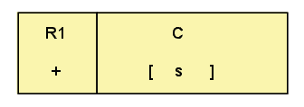
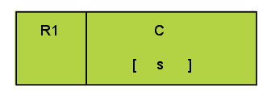
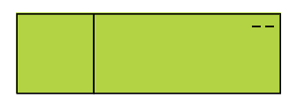
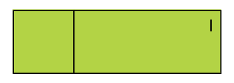
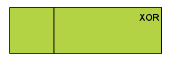

| Variable |
Description |
| N,Ni |
Behavior Tree Nodes |
| T,Ti |
Behavior Trees |
| C,Ci |
Components |
| C# |
A Component Instance |
| s |
A State of a Component |
| e |
An Event |
| a |
An Attribute of a Component |
| b |
A Branching Condition of a Component |
| Label | Name |
Description |
| A | Component Name |
Specifies a component |
| B | Behavior |
Specifies the behavior associated with the component |
| C | Operator |
Describes threaded behavior that is linked to the matching node in the tree |
| D | Label |
An optional label for disambiguation (in case a node appears elsewhere with the same component and behavior) |
| E | Behavior Type |
Delimiters on the behavior indicating the type of behavior involved |
| F | Traceability Link |
A reference to the requirements document |
| G | Traceability Status |
Indicates how the node relates to the traceability link |
| H | Tag |
The box on the left-hand side of the node (may be omitted in different contexts) |
| I | Behavior Tree Node |
A node consisting of all or some of the information above |
| Label | Name |
Description |
| A | Primary Component |
The component and behavior that form the relation |
| & Behavior | ||
| B | Related Component |
Component (and optional behavior) related to the primary component and behavior |
| C | Qualifier |
Specifies the type of the relation. Must be one of What, Where, When, Why, Who or How |
| D | Preposition |
Further qualifies the relation to remove potential ambiguity |
| E | Secondary Relation |
The related component is linked to the primary component using a forward slash (/). Multi-level relations can be formed by using multiple forward slashes |
Figure 2: Behavior Tree Relation Naming Conventions
| Label | Name |
Description |
| A | Ancestor Node |
Any node which appears in a direct line between the node of interest and the root node of the tree |
| B | Parent Node |
An immediate ancestor |
| C | Sibling Node |
A node which shares the same parent |
| D | Sibling Branch |
A subtree with a sibling node as its root |
| E | Child Node |
A node immediately below the node of interest |
| F | Descendant |
Any node appearing below the node of interest |
Figure 3: Behavior Tree Tree Naming Conventions
| Label | Name |
Description |
| A | Root Node |
The first node in a tree (does not have a parent) |
| B | Edge |
A connection between two nodes |
| C | Leaf Node |
A node with no children |
| D | Branch |
A subtree of the node of interest |
Figure 4: Tree Branch Naming Convention
| Type | Graphical Notation |
Description |
| Original |  |
No traceability status indicates that the behavior is stated in the original requirements. The color green is used for original requirements. |
| Implied |  |
The + traceability status indicates that the behavior is not explicitly stated in the original requirements but is implied by the requirement. The color yellow is used for implied behavior. |
| Missing |  |
The - traceability status indicates that the behavior is missing from the original requirements and is needed for completeness. The color red is used for missing behavior. |
| Design |  |
The +- traceability status indicates that the behavior is a refinement of the original requirements, indicating that the behavior is implied but the detail to describe it is missing. |
| Updated |  |
The ++ traceability status indicates that the behavior has been added in the post-development or maintainence phase. The color blue is used for updated behavior. Where there are different series of changes / upgrades we use ++v1.0, ++v2.0, etc to indicate the particular upgrade series. |
| Deleted |  |
The traceability status indicates that the behavior has been deleted from the behavior tree. The color grey is used for deleted behavior, but the nodes may also be hidden optionally by using tool support. |
| Type | Graphical Notation |
Description |
| State Realisation |  |
Component C realises state s. |
| System State Realisation |  |
This is a state realisation decorated with a double box to indicate the component is a system component in the current context. There can only be one system component in each context. |
| Selection |
If condition b evaluates to true, then pass control to child nodes otherwise terminate. |
|
| Event |
Wait until event e is received. |
|
| Guard |  |
Wait until condition b evaluates to true, then pass control to child nodes. |
| Internal Output |
Generate input e and send to the system. |
|
| Internal Input |  |
Wait for input e from the system. |
| External Output |  |
Generate output e and send to the environment. |
| External Input |  |
Wait for input e to be received from the environment. |
| Empty Node |  |
Empty Nodes can be used together with labels to be origins or destinations of node operators. Empty Nodes are also useful for grouping child nodes into multiple branch types. |
| Type | Graphical Notation |
Description |
| Sequential Composition |  |
Execute N, passing control to tree T. The behavior of concurrent BTs may be interleaved between N and T. |
| Atomic Composition |  |
Execute N1 immediately followed by N2, passing control to tree T. The behavior of concurrent BTs may not be interleaved between N1 and N2. |
| Parallel Branching |  |
Execute N, passing control to both T1 and T2. |
| Alternative Branching |  |
A nondeterministic choice is made between T1 and T2, depending on which is ready to execute (not blocked) |
| Type | Graphical Notation |
Description |
| Reference |  |
Behave as the destination node. The destination node must appear in an alternative branch to the origin. |
| Reversion |  |
Behave as the destination node. The destination node must be an ancestor. All sibling behaviour is terminated. |
| Branch Kill |  |
Terminate all behavior associated with destination tree. |
| Synchronisation |  |
Wait for destination node (or nodes). |
| May |  |
The node may execute normally, or may have no effect. |
| Conjunction |  |
The operators &, | and XOR correspond to logical conjunction, disjunction and exclusive or respectively. |
| Disjunction |  | |
| Exclusive OR |  |